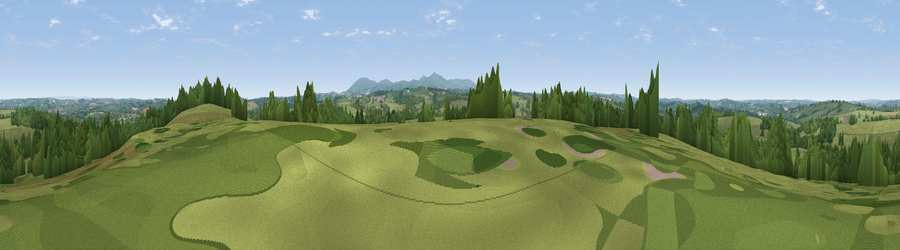

Viewpoint near Jacobstowe
#27207 in England · top 57% of its area beats it · near Jacobstowe · access?Where it is
The exact computed spot (SS 56775 01675). Click the marker for map links.
Public access: no public right of way or access land is recorded at this exact spot — it may be on private land. Computed from Natural England's CRoW access layer and OpenStreetMap rights of way — not the legal definitive map. Always verify locally.
The view, rendered

A 360° render of this exact spot computed from the terrain model, tree cover and land cover — summer colours, afternoon light, calibrated against photographs of famous viewpoints. Real trees, hedges and buildings will differ in detail.
The panorama
Grey silhouette: terrain skyline in each direction (720 bearings, Earth curvature and refraction included). Dashed green: skyline with trees (+15 m) and buildings (+8 m) as obstacles. Blue strip: how far the ground is visible on each bearing.
Where the view opens
Wedge length = distance to the farthest visible ground on that bearing (vegetation-aware). Rings at 10, 25 and 50 km.
What fills the view
77% grassland · 20% woodland · 2% cropland
Angular shares of the visible panorama (visual magnitude), not map area. Landscape diversity 0.27 (0–1 Shannon).
Key numbers
More beautiful places nearby
The staircase of upgrades: each row has a higher view potential than everything closer. Driving times are estimates from straight-line distance, calibrated against real road routing — check an actual route before setting out.
| Place | Direction | Drive | Score |
|---|---|---|---|
| Viewpoint near Hatherleigh | NNW · 3 km | ~8 min | 49.0 |
| Viewpoint near Folly Gate | SSE · 4 km | ~8 min | 57.2 |
| Viewpoint near Folly Gate | SSE · 5 km | ~10 min | 57.9 |
| Viewpoint near Okehampton | S · 7 km | ~14 min | 60.0 |
| Viewpoint near Iddesleigh | NNE · 8 km | ~15 min | 61.0 |
| Viewpoint near Sticklepath | SE · 8 km | ~16 min | 63.8 |
| Viewpoint near Bondleigh | ENE · 10 km | ~19 min | 64.0 |
| Viewpoint near Petrockstowe | NW · 10 km | ~20 min | 65.5 |
50.79689, -4.03366 · source: screening · position refined by local search. Computed location — check access rights before visiting.